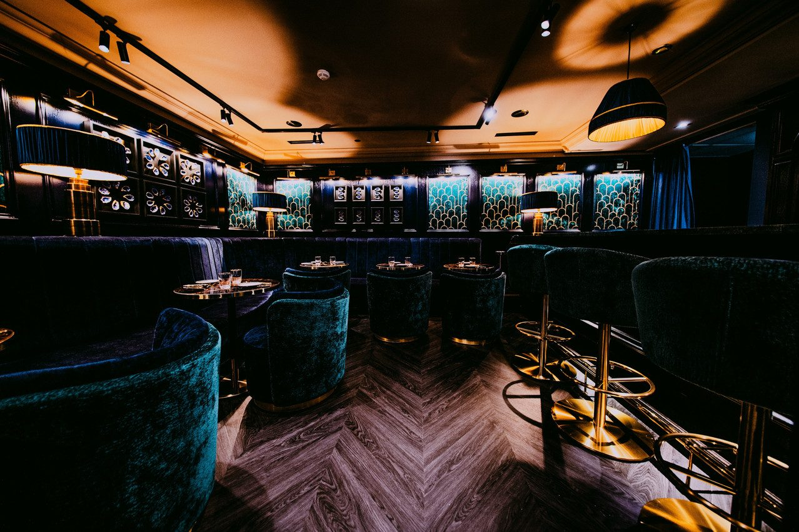
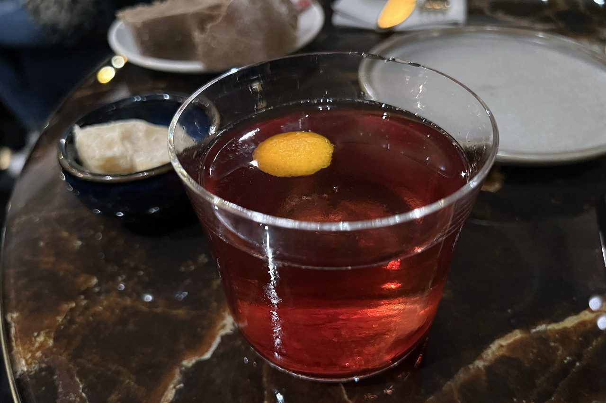
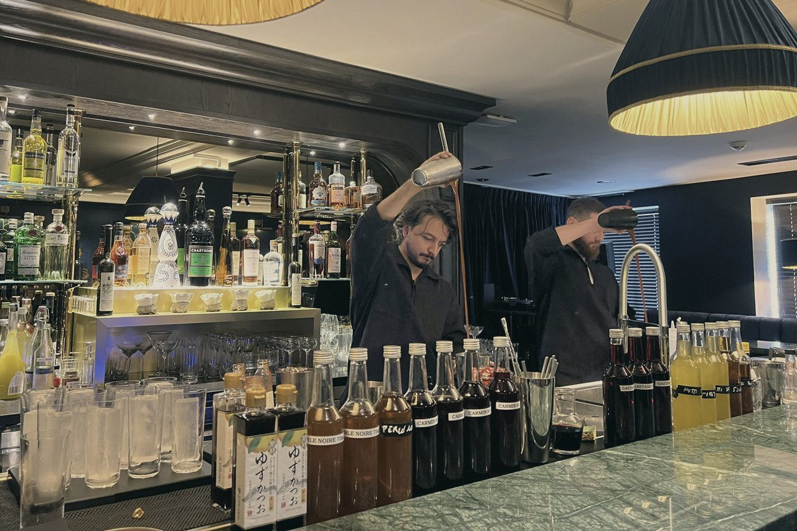
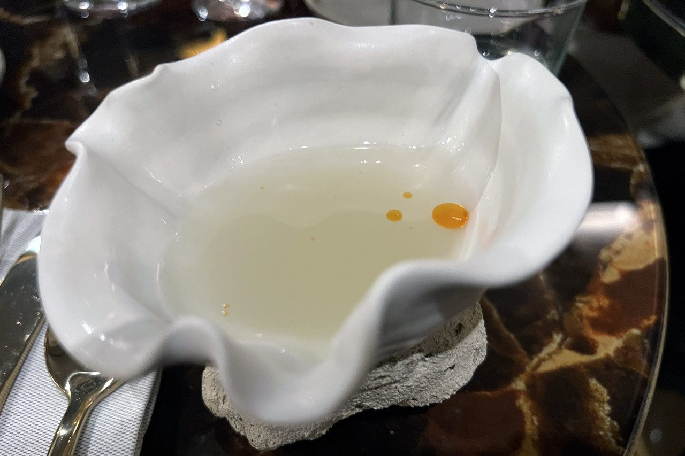
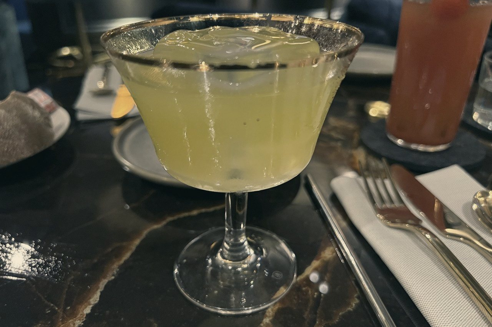
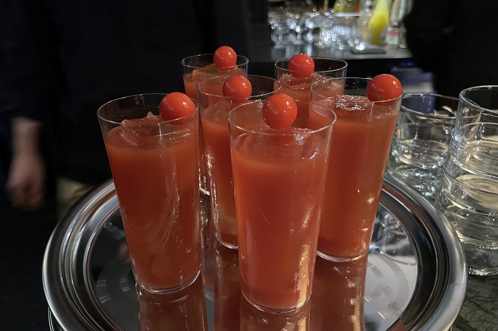
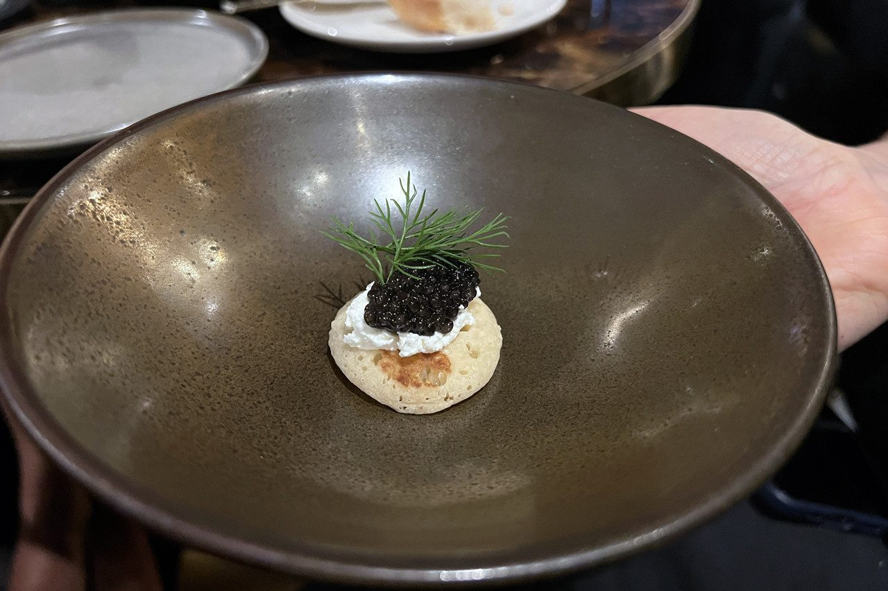

Perle Noire
Rare par nature. Ouvert la nuit.
Un bar à cocktails au dernier étage de la Place d'Armes. Velours sombre, laiton, lumières basses — et des cocktails composés comme des parfums.
Des cocktails composés comme des parfums
Un ancien parfumeur, passé derrière le bar.Ici, le cocktail se pense comme une fragrance : huiles essentielles, acidité mesurée, équilibre naturel. Une note de tête qui accroche, un cœur qui tient, une base qui reste. Rien de tapageur — de la précision.
Trente places, quatre soirs par semaine, aucune réservation. La rareté n'est pas une posture : c'est le projet. On pousse la porte, on trouve une place au comptoir, et la nuit commence.

Six compositions
Une sélection de la carte — chaque cocktail, une composition. Les classiques revisités complètent la carte au comptoir.
Sélection d'après la presse d'ouverture — carte complète et millésimes à confirmer avec la maison. Cocktails classiques (Negroni, Old Fashioned…) également au comptoir.
Velours, laiton, coquilles d'huître





Ce soir, Place d'Armes
Les soirs
Sans réservation — on se présente au comptoir.
Nous trouver
7, Place d'Armes
L-1136 Luxembourg
Au dernier étage, au-dessus de La Lorraine